Writing documentation for Intune and endpoint management environments often comes down to a practical constraint that is easy to underestimate. You need accurate, consistent visuals from mobile devices, and you need them in a format that can be reused across guides, training materials, and support content without additional editing overhead.
In practice, this is where most workflows become fragmented. Screenshots are captured in different ways depending on the device, then manually cropped, reformatted, or recreated to fit into documentation standards. Over time, this creates noticeable friction in what should be a straightforward part of the process.
A screen mirroring tool built for documentation and training workflows
1PhoneMirror was created as a go-to screen mirroring tool to address this specific gap. The focus is not on replacing existing mobile management or testing tools, but on simplifying the capture and reuse of mobile device screens in documentation and live training scenarios.
The project is freely available and can be installed directly on your Windows using Winget.
winget install MSEndpointMgr.1PhoneMirror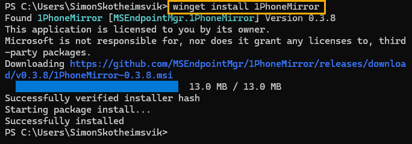
The user interface is intentionally minimalist to focus on the phone during live training.
Why is a screen mirroring tool needed in Intune environments?
The need for a reliable screen mirroring tool often arises naturally in environments where documentation and user support and training are part of daily operations. Intune administrators, trainers, and endpoint engineers frequently need to demonstrate configuration steps or user interactions on mobile devices, and those demonstrations need to translate cleanly into written or visual material.
The challenge is that mobile platforms are not designed with documentation workflows in mind. iOS, iPadOS, macOS, and Android all provide different mechanisms for screen sharing or debugging, but none are particularly optimized to produce consistent, framed outputs suitable for training material.
This is where 1PhoneMirror fits in. It provides a unified screen mirroring tool on Windows that allows multiple device types to be displayed in a consistent, framed interface, with the express purpose of making capture and reuse more predictable.
A screen mirroring tool designed around existing platform capabilities
Rather than introducing proprietary protocols or requiring additional components on mobile devices, 1PhoneMirror builds on existing operating system functionality. No installations should be needed on the phones.
For Apple devices, the screen mirroring tool uses the built-in AirPlay protocol. Devices connect through the standard Screen Mirroring interface, and once connected, the stream is handled directly on the Windows receiver, 1PhoneMirror.
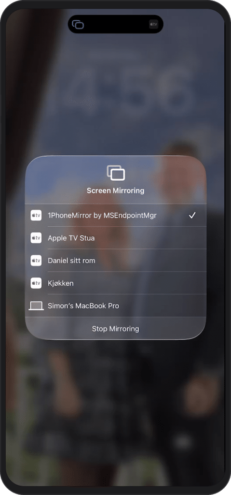
On Android, the screen mirroring tool relies on the standard wireless debugging workflow found under Developer Options. Click <A> in 1PhoneMirror to get started, and ready the guidelines found under <?>.
Once the device is paired, screen data is streamed using a scrcpy-compatible pipeline over the local network. This approach avoids the need for additional applications on the device itself and keeps the setup aligned with standard Android development capabilities.
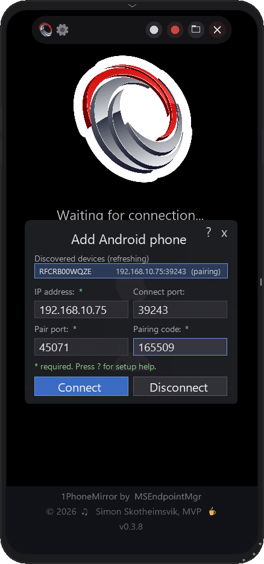
The result is a screen mirroring tool that does not rely on custom mobile deployments or agent installations, which are often required in managed enterprise environments.
Using the screen mirroring tool for documentation workflows
Where 1PhoneMirror becomes particularly useful is in how it handles output. The intention is not only to display a mobile device screen, but to produce content that can be used directly in documentation without additional formatting.
Each mirrored session is rendered inside a consistent device frame, and you can even change color of the device frame in the settings menu <S>. This means screenshots and recordings automatically appear in a format that is suitable for inclusion in Intune guides, training documentation, and internal knowledge bases. The need for manual cropping or visual alignment is largely removed from the workflow.
The screen mirroring tool also integrates capture functionality directly into the viewing experience. Screenshots can be taken instantly, recordings can be created in standard MP4 video formats, and lightweight GIF output is available for scenarios where smaller, embedded visuals are preferred. In addition to visual capture,OCR-based text extraction is available, allowing text visible on a device screen to be copied directly into documentation or support tickets.
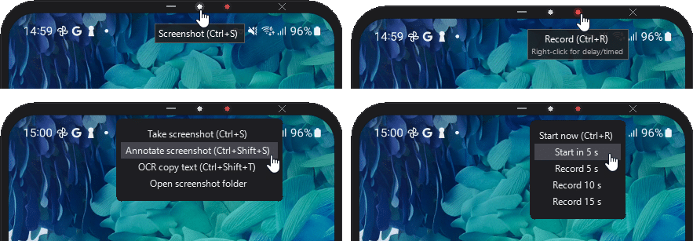
For screen recordings, you can select either MP4 or GIF as the output format in the Settings menu.
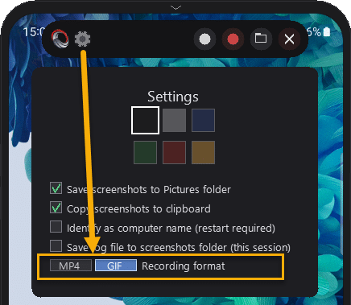
The tool also supports annotation during capture, which allows emphasis to be added directly within the screenshot or recording process. You can add arrows, filled and open squares, blur, and text. This reduces the need to rework content and helps prepare the captured material for direct use.
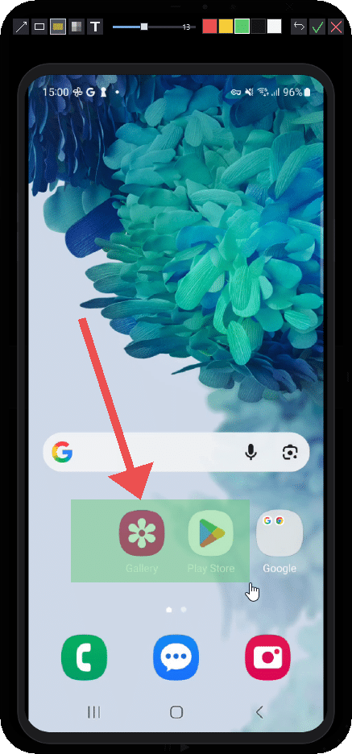
You can save screenshots to a specified folder or copy them directly to your clipboard for use in documentation workflows. You will find shortcut to the picture folder under the Menu <M>, or by right-clicking on the capture button.
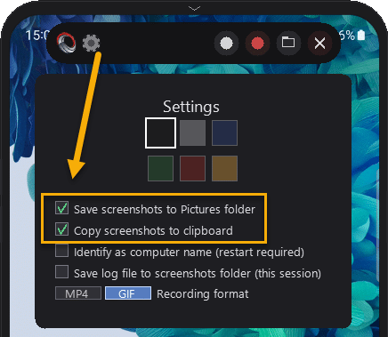
These capabilities are intentionally integrated into a single interface rather than separated into external utilities, to keep documentation creation as close to the original visual context as possible.
Supporting live training and demonstrations
Beyond static documentation, a screen mirroring tool is often most valuable during live training sessions or support demonstrations. In these scenarios, the ability to quickly switch between devices, highlight specific UI elements, or capture moments during a walkthrough becomes important.
1PhoneMirror supports multiple connected devices within the same session, allowing trainers to switch between devices without reconfiguration. This is particularly useful in environments where different operating system versions or device types need to be demonstrated side by side.
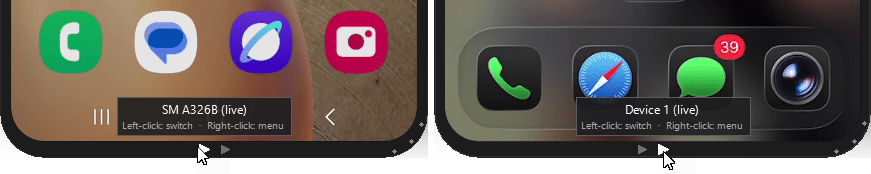
For live sessions, this reduces dependency on external tools and helps keep the focus on the actual training content rather than the mechanics of capturing it.
The app window size will dynamically adapt the device you connect, both in size and orientation. Having and iPad or a macOS connecting, you will see the screen jump to the corresponding size.
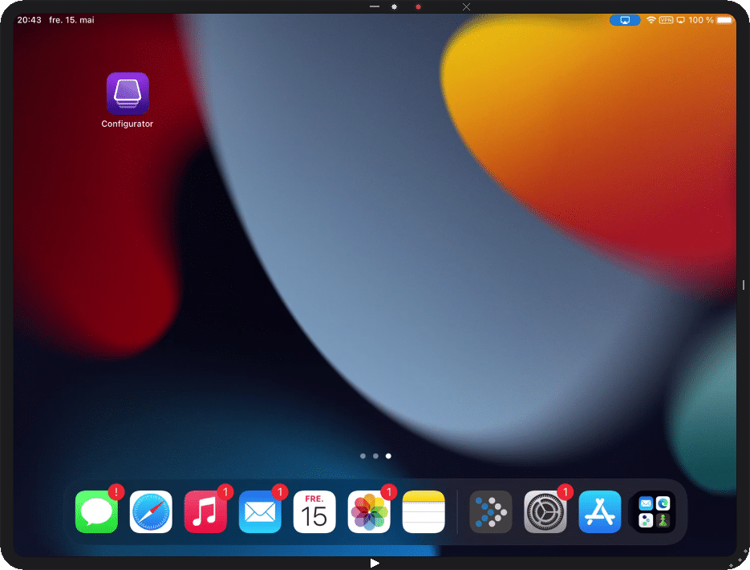
Example of macOS screenmirroring to 1PhoneMirror:
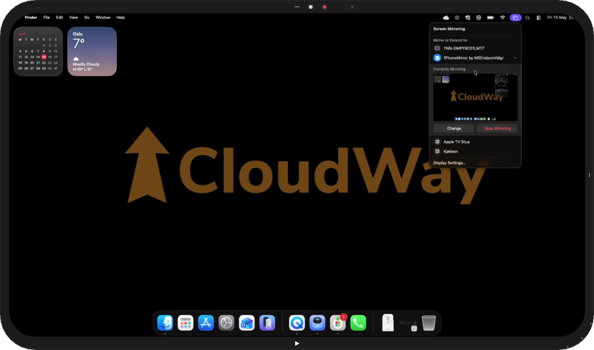
For the tech savy, I have left a log viewer <L> used for troubleshooting during development.
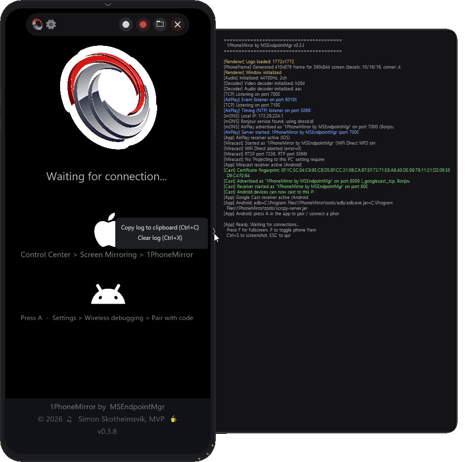
You can even log til file from the settings <S> menu.
Considerations for managed Intune environments
Because 1PhoneMirror is intended for use in enterprise environments, it has been designed with typical Intune constraints in mind.
The screen mirroring tool does not require any application installation on mobile devices. On iOS and iPadOS, it uses native AirPlay functionality, while Android relies on wireless debugging where permitted by policy. This means the tool can be used in environments where mobile application deployment is restricted or tightly controlled.
All communication occurs over the local network, and device discovery relies on standard network mechanisms. In practice, this means the tool relies on standard LAN connectivity rather than on cloud services or external relays. Local firewall ports on the Windows device will be configured during installation. The firewall requirements are listed in the app and in the GitHub readme.
If you have situations where the tool is running on multiple devices within the same network, you can use a setting to identify the instances by computer name.
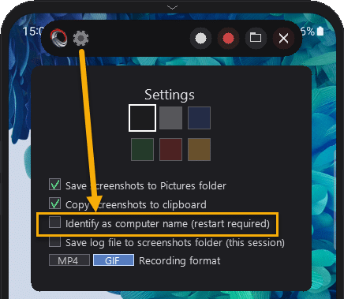
On Android, functionality may be limited in environments where developer options are disabled through policy. This is an expected constraint of the platform rather than the tool itself, and it is surfaced in the interface where relevant.
Deployment of the screen mirroring tool
1PhoneMirror can be installed individually using Winget or deployed more broadly through Intune as a Win32 application. The project is still in an early phase, and the application is not digitaly signed yet. The application installs per machine, typically under Program Files.
For enterprise deployment scenarios, the MSI is available on GitHub and can be packaged with standard Intune tooling and distributed to managed endpoints, with no additional configuration required for basic operation.
Where this screen mirroring tool fits in the broader workflow
1PhoneMirror is not intended as a device management solution or remote support tool. It focuses specifically on the documentation and training layer of endpoint management work.
In many environments, the gap is not in device control, but in how device output is captured and reused. This screen mirroring tool sits in that gap and attempts to reduce the friction between seeing something on a device and turning it into documentation or training material.
Ongoing development of the screen mirroring tool
1PhoneMirror is actively and continuously developed. The application checks for new releases at startup and you can also perform a manual update check from the Information <i> panel.
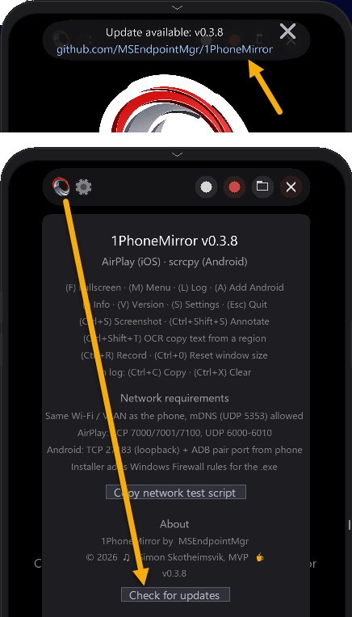
You can use Winget to update the app:
winget update 1PhoneMirror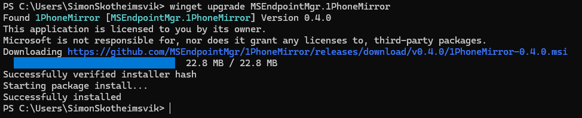
The screen mirroring tool will remain free, and feedback or ideas for new functionality are always welcome as the project evolves.
Closing thoughts
The motivation behind 1PhoneMirror stemmed from recurring friction in documentation workflows rather than a need to introduce new device management capabilities. Over time, the process of capturing and preparing mobile device screenshots became one of those small but persistent inefficiencies that accumulate across documentation, training and support work.
This screen mirroring tool aims to reduce that overhead by making the capture process more direct and consistent. If it fits within existing Intune documentation workflows or improves the quality of training materials, it is serving its intended purpose.
The application is available on GitHub, and feedback from real-world usage in endpoint management environments is particularly valuable as the tool evolves.
https://github.com/MSEndpointMgr/1PhoneMirror
I have already seen very positive results from using the app in my own workflow, and I hope it can benefit the wider Intune community by reducing daily friction so more time can be spent on the work that actually matters.
For the record, all screenshots of 1PhoneMirror in this post where the menus are visible were taken with a licensed third-party tool, Snagit. While the 1PhoneMirror tool has worked well in my own environment, it is provided as-is and should be tested in your own lab before rolling out more broadly. As with any utility used in enterprise environments, you remain responsible for how and where it is used. That said, feedback, ideas, and real-world experiences are always welcome and help shape future improvements.